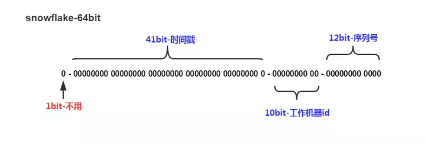

分布式唯一ID
我们在工作中经常需要用到唯一id 来对信息和记录进行唯一性标识
因为许多数据库的特性, 我们对唯一id还有一个趋势增长的要求
所以核心要点就两个
- 全局唯一
- 趋势有序
下面介绍几种常用的方法
数据库
最常见的方式。利用数据库创建一张表，全数据库唯一。
优点：
- 简单，代码方便，性能可以接受。
- 数字ID天然排序，对分页或者需要排序的结果很有帮助。
缺点：
- 不同数据库语法和实现不同，数据库迁移的时候或多数据库版本支持的时候需要处理。
- 在单个数据库或读写分离或一主多从的情况下，只有一个主库可以生成。有单点故障的风险。
- 在性能达不到要求的情况下，比较难于扩展。
- 如果遇见多个系统需要合并或者涉及到数据迁移会相当痛苦。
- 分表分库的时候会有麻烦。
优化方案：
针对主库单点，如果有多个Master库，则每个Master库设置的起始数字不一样，步长一样，可以是Master的个数。
比如：
Master1生成的是 1,4,7,10
Master2生成的是 2,5,8,11
Master3生成的是 3,6,9,12
这样就可以有效生成集群中的唯一ID，也可以大大降低ID生成数据库操作的负载。
使用redis
当使用数据库来生成ID性能不够要求的时候，我们可以尝试使用redis来生成ID。
这主要依赖于redis是单线程的，所以也可以用生成全局唯一的ID。可以用redis的原子操作 INCR和INCRBY来实现。
可以使用redis集群来获取更高的吞吐量。假如一个集群中有5台redis。可以初始化每台redis的值分别是1,2,3,4,5，然后步长都是5。各个redis生成的ID为：
A：1,6,11,16,21
B：2,7,12,17,22
C：3,8,13,18,23
D：4,9,14,19,24
E：5,10,15,20,25
重点: 负载到哪个机器确定好，未来很难做修改。
但是3-5台服务器基本能够满足器上，都可以获得不同的ID。但是步长和初始值一定需要事先需要了。使用redis集群也可以防止单点故障的问题。
另外，比较适合使用redis来生成每天从0开始的流水号。
比如订单号=日期+当日自增长号。可以每天在redis中生成一个Key，使用INCR进行累加。
优点：
- 不依赖于数据库，灵活方便，且性能优于数据库。
- 数字ID天然排序，对分页或者需要排序的结果很有帮助。
缺点：
- 如果系统中没有redis，还需要引入新的组件，增加系统复杂度。
- 需要编码和配置的工作量比较大。
twitter在把存储系统从MySQL迁移到Cassandra的过程中由于Cassandra没有顺序ID生成机制，于是自己开发了一套全局唯一ID生成服务:Snowflake。
Snowflake使用二进制计数,讲一个完整的UUID分为不同部分,依据不同的规则生成
- 41位的时间序列（精确到毫秒，41位的长度可以使用69年）
- 10位的机器标识（10位的长度最多支持部署1024个节点）
- 12位的计数顺序号（12位的计数顺序号支持每个节点每毫秒产生4096个ID序号） 最高位是符号位，始终为0。

优点：
- 高性能，低延迟；独立的应用;
- 按时间有序。
缺点:
- 需要独立的开发和部署。
- 强依赖时钟,如果主机时间回拨,则会造成重复ID,会产生
- ID虽然有序,但是不连续
mongodb
MongoDB的ObjectId和snowflake算法类似。
它设计成轻量型的，不同的机器都能用全局唯一的同种方法方便地生成它。
MongoDB 从一开始就设计用来作为分布式数据库，处理多个节点是一个核心要求。
使其在分片环境中要容易生成得多
如果观察过mongodb的数据会发现,在短期内插入大量数据的话只有后面几位不一致
但是如果你等几秒再插入数据,中间部分地方也会不一致
ObjectId使用12字节的存储空间，其生成方式如下：
| 0-1-2-3 | 4-5-6 | 7-8 | 9-10-11 |
|---|---|---|---|
| 时间戳 | 机器ID | PID | 计数器 |
前四个字节时间戳是从标准纪元开始的时间戳，单位为秒，有如下特性：
1 时间戳与后边5个字节一块，保证秒级别的唯一性；
2 保证插入顺序大致按时间排序；
3 隐含了文档创建时间；
4 时间戳的实际值并不重要，不需要对服务器之间的时间进行同步（因为加上机器ID和进程ID已保证此值唯一，唯一性是ObjectId的最终诉求）。
机器ID是服务器主机标识，通常是机器主机名的散列值。
同一台机器上可以运行多个mongod实例，因此也需要加入进程标识符PID。
前9个字节保证了同一秒钟不同机器不同进程产生的ObjectId的唯一性。后三个字节是一个自动增加的计数器（一个mongod进程需要一个全局的计数器），保证同一秒的ObjectId是唯一的。同一秒钟最多允许每个进程拥有（256^3 = 16777216）个不同的ObjectId。
如: “5a3fa45b421aa93195b92d67”
优点:
- 时间戳保证秒级唯一
- 机器ID保证设计时考虑分布式
- 避免时钟同步
- PID保证同一台服务器运行多个mongod实例时的唯一性
- 最后的计数器保证同一秒内的唯一性（选用几个字节既要考虑存储的经济性，也要考虑并发性能的上限）。
- 既可以在服务器端生成也可以在客户端生成，在客户端生成可以降低服务器端的压力。
缺点:
- 需要独立实现和部署
携程的方案
携程采用了另一种解决方案
也是基于数据库
先在数据库中创建一个表
| id | server |
|---|---|
| 1 | 192.168.8.1 |
| 2 | 192.168.8.2 |
要获取id的时候先使用 replace into 更新自己服务器的记录, 然后在查询自己服务器的当前值
ps: replace into 会先尝试insert into 如果已经存在会进行对当前记录删除,然后重新插入
这样就能获取到每个服务器的最大的值了
但是这样性能会损耗比较大
所以携程做了id段缓存
一次性生成 1000(这个数字可配置) 个id
要获取当前id的时候会先去请求缓存检查当前要获取的数字是否在缓存段中,如果在就直接获取,不存在就重新触发id段的生成,然后获取id
举例:
192.168.8.1 第一次拿到的id是1,那他就会把号段 (1 * 1000,(1+1)*1000)(左闭右开区间)存入缓存, 该机器上面的客户获取id的时候就检查是否在这个范围之内, 如果刚好等于2000
则去触发号段更新,此时号段id为3, 生成的对应号段为 (3*1000, (3+1) *1000)
再执行号码分发的处理
优点:
- 数字类型, 使用方便
- 生成简单
缺点:
- 需要单独实现
- 当缓存服务器数据丢失的话,会造成id段浪费
总结
总体而言，分布式唯一ID需要满足以下条件：
高可用性：不能有单点故障。
全局唯一性：不能出现重复的ID号，既然是唯一标识，这是最基本的要求。
趋势递增：在MySQL InnoDB引擎中使用的是聚集索引，由于多数RDBMS使用B-tree的数据结构来存储索引数据，在主键的选择上面我们应该尽量使用有序的主键保证写入性能。
时间有序：以时间为序，或者ID里包含时间。这样一是可以少一个索引，二是冷热数据容易分离。
分片支持：可以控制ShardingId。比如某一个用户的文章要放在同一个分片内，这样查询效率高，修改也容易。
单调递增：保证下一个ID一定大于上一个ID，例如事务版本号、IM增量消息、排序等特殊需求。
长度适中：不要太长，最好64bit。使用long比较好操作，如果是96bit，那就要各种移位相当的不方便，还有可能有些组件不能支持这么大的ID。
信息安全：如果ID是连续的，恶意用户的扒取工作就非常容易做了，直接按照顺序下载指定URL即可；如果是订单号就更危险了，竞争对手可以直接知道我们一天的单量。所以在一些应用场景下，会需要ID无规则、不规则。